¡Adiós Word, Hola LaTeX!
El Poder de Escribir como un Profesional
2025-06-20
🖼️ ¿Te ha pasado esto?
LaTeX
¿ Qué es LaTeX?
¿Qué es LaTeX?
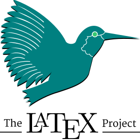
- ¿Qué es LaTeX?
- Sistema para crear documentos académicos y cientÃficos con formato profesional.
- ¿Por qué usarlo?
- Automatiza referencias y ecuaciones.
- Ofrece mayor control sobre formato y estructura.
- Automatiza referencias y ecuaciones.
Ejemplos de LaTeX
Word vs LaTeX
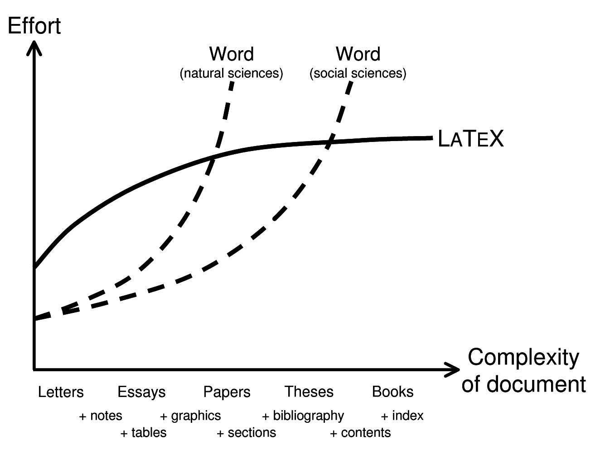
¿Cómo empezar?
- Editor recomendado:
- Overleaf (en lÃnea, sin instalación)
- Instalaciones locales:
- TeXLive, MiKTeX, MacTeX
- Editores útiles:
- TeXstudio, VSCode + LaTeX Workshop
📠Overleaf: LaTeX Online
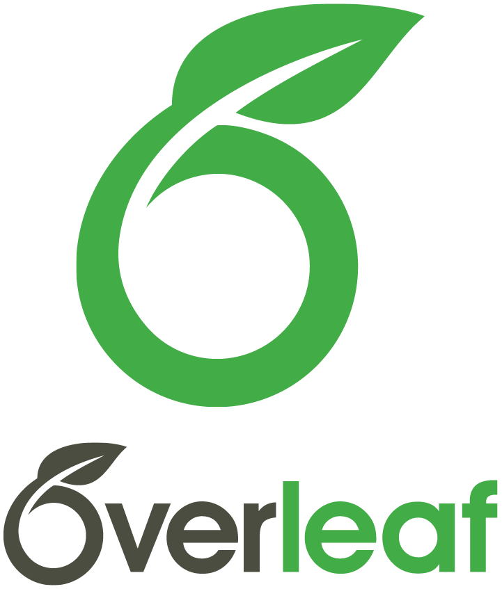
- ¿Qué es?
- Plataforma en lÃnea para escribir y compilar documentos en LaTeX sin instalación.
- ¿Por qué usarlo?
- Edición colaborativa en tiempo real.
- Integración con GitHub y la nube.
- Compilación y previsualización instantánea.
- Edición colaborativa en tiempo real.
LaTeX
Manos a la Obra
📠Ejemplo 1: Conceptos Básicos
Todo documento LaTeX comienza con la declaración de clase (\documentclass) y el uso de paquetes necesarios. Luego se definen el tÃtulo, autor, fecha y el contenido del documento dentro del entorno \begin{document} … \end{document}.
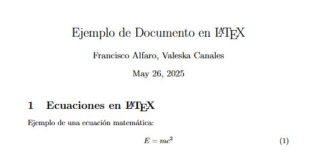
📚 Ejemplo 2: Tablas Bonitas
LaTeX permite crear tablas con gran precisión, controlando alineación, bordes, estilos y hasta fórmulas dentro de las celdas con paquetes como booktabs o array.
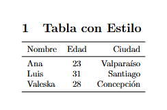
🨠Ejemplo 3: Colores y Texto
Con el paquete xcolor, puedes usar colores en textos, resaltar conceptos o crear estilos visuales atractivos para presentaciones o informes.
\documentclass{article}
\usepackage{xcolor}
\begin{document}
\section*{Texto con Colores}
El texto puede ser \textcolor{blue}{azul}, \textcolor{red}{rojo}, o \textbf{\textcolor{orange}{resaltado}}.
También se pueden definir colores personalizados:
\textcolor[rgb]{0.1,0.6,0.1}{Verde especial.}
\end{document}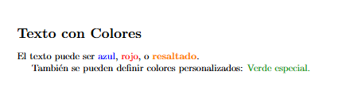
🧠Ejemplo 4: Lógica Matemática
LaTeX es ideal para escribir fórmulas matemáticas complejas, especialmente en lógica, álgebra o teorÃa de conjuntos, gracias a amsmath.
\documentclass{article}
\usepackage{amsmath}
\begin{document}
\section*{Lógica Proposicional}
Sea $P \Rightarrow Q$ la implicación. Podemos expresar su tabla de verdad como:
\[
\begin{array}{c|c|c}
P & Q & P \Rightarrow Q \\
\hline
V & V & V \\
V & F & F \\
F & V & V \\
F & F & V \\
\end{array}
\]
\end{document}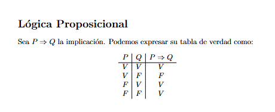
📄 Ejemplo 5: Listas Personalizadas
Las listas ordenadas y no ordenadas se personalizan fácilmente con enumitem, permitiendo cambiar sÃmbolos, márgenes, o incluso mezclar listas anidadas.
\documentclass{article}
\usepackage{enumitem}
\begin{document}
\section*{Lista con sÃmbolo personalizado}
\begin{itemize}[label=\textbullet] % También puedes usar: \textendash, \textasteriskcentered, etc.
\item Primera tarea completada
\item Segunda tarea pendiente
\item Tercera tarea en progreso
\end{itemize}
\end{document}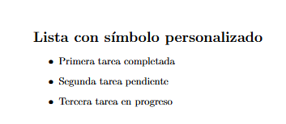
LaTeX
¿Qué más se puede hacer con LaTeX?
¿Qué más se puede hacer con LaTeX?
- Mucho más que informes:
- Presentaciones profesionales (
beamer) - Carteles cientÃficos (
beamerposter) - CurrÃculums vitae (
moderncv,awesome-cv) - Tesis, libros, cartas y exámenes
- Diagramas con
TikZ - Certificados y pósters personalizados
- Presentaciones profesionales (
¿Qué más se puede hacer con LaTeX?
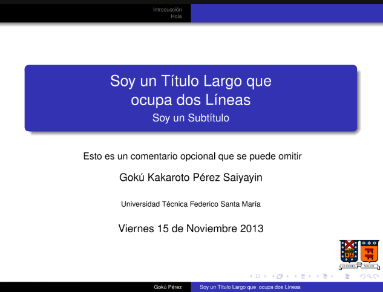
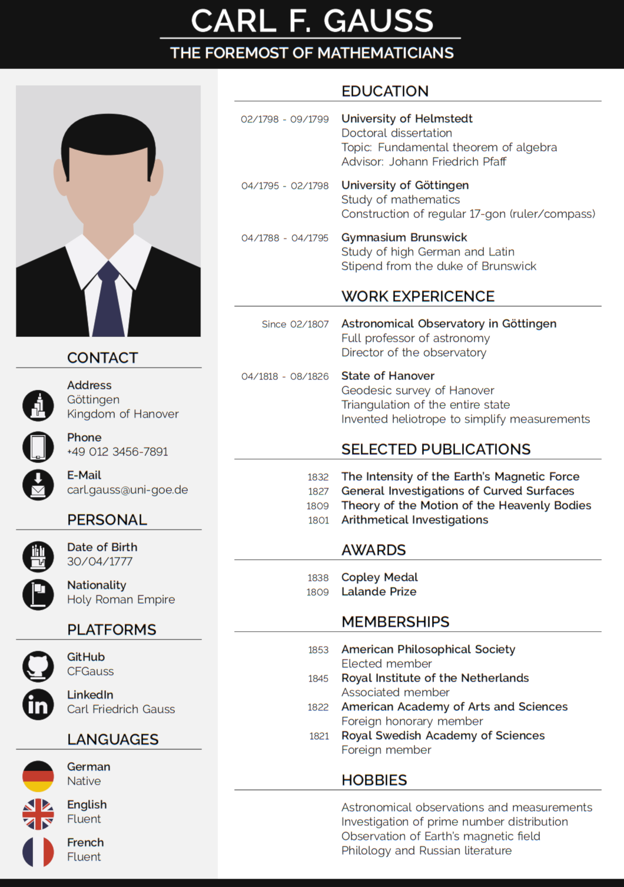
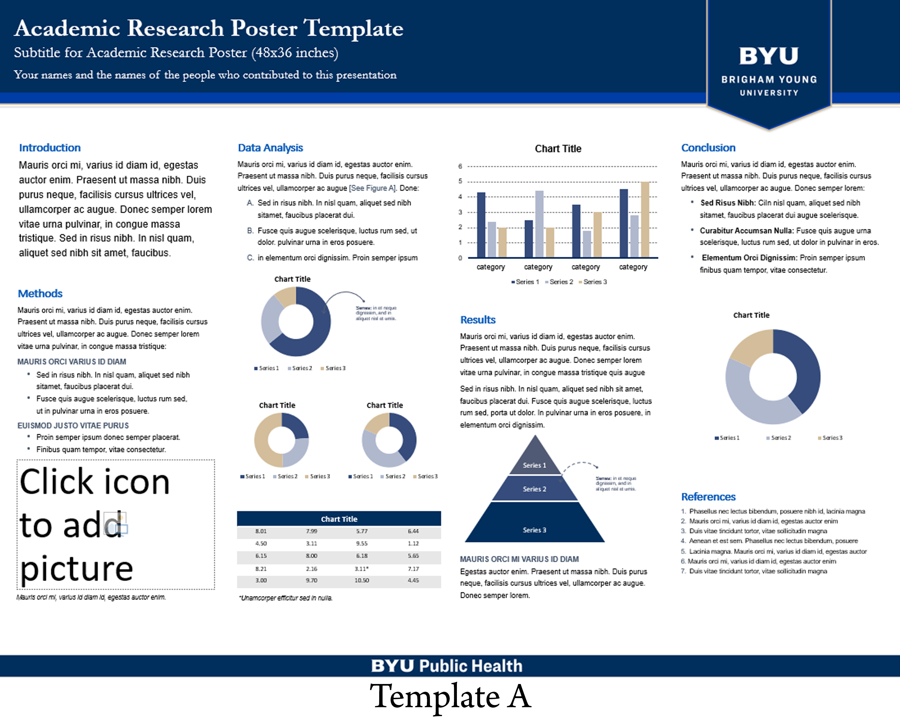
🤠Ejemplo 6: Presentación con Beamer
El paquete beamer permite crear presentaciones elegantes y profesionales en PDF. Puedes agregar tÃtulos, viñetas, ecuaciones, imágenes, animaciones paso a paso, y más.
\documentclass{beamer}
\usetheme{Madrid}
\usepackage{amsmath}
\title{Introducción a \LaTeX}
\author{Francisco Alfaro}
\date{\today}
\begin{document}
\frame{\titlepage}
\begin{frame}{Ecuación Clásica}
\begin{itemize}
\item FÃsica y matemáticas se ven mejor en LaTeX.
\item Por ejemplo:
\end{itemize}
\[
E = mc^2
\]
\end{frame}
\end{document}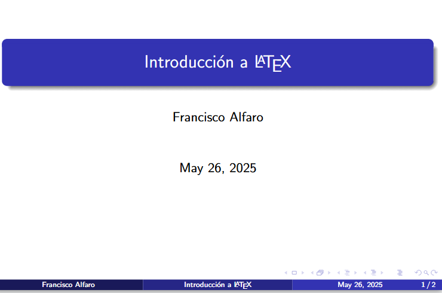
👔 Ejemplo 7: CurrÃculum con ModernCV
Con moderncv, puedes generar currÃculums elegantes y completamente personalizables, controlando estilos, secciones, colores y tipografÃas.
\documentclass[11pt,a4paper]{moderncv}
\moderncvstyle{classic}
\moderncvcolor{blue}
\name{Francisco}{Alfaro}
\title{Data Scientist}
\email{francisco@example.com}
\phone[mobile]{+56~9~1234~5678}
\begin{document}
\makecvtitle
\section{Educación}
\cventry{2016--2018}{MagÃster en Ciencia de Datos}{Universidad Técnica Federico Santa MarÃa}{Chile}{}{}
\section{Experiencia}
\cventry{2020--2024}{Head of Advanced Analytics}{Grupo Security}{Chile}{}{
\begin{itemize}
\item Lideré proyectos de ciencia de datos para distintas empresas del grupo.
\item Automatización de pipelines y generación de modelos predictivos.
\end{itemize}
}
\end{document}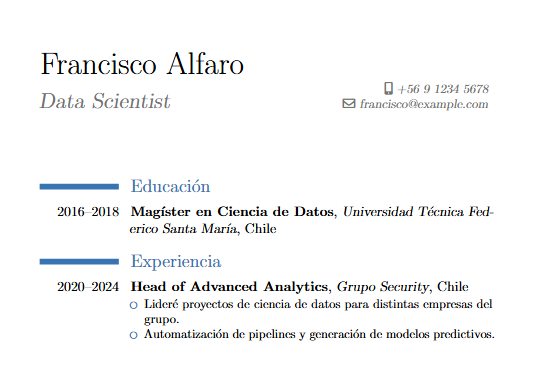
🖼️ Ejemplo 8: Póster con tikzposter
tikzposter es una clase moderna para hacer pósteres cientÃficos. Usa TikZ para controlar el diseño visual.
\documentclass[a0paper,landscape,blockverticalspace=5mm]{tikzposter}
\title{TÃtulo del Póster}
\author{Francisco Alfaro, Valeska Canales}
\institute{Universidad Técnica Federico Santa MarÃa}
\usetheme{Default}
\usecolorstyle{Germany}
\begin{document}
\maketitle
\block{Introducción}{
LaTeX es un sistema ideal para preparar pósteres cientÃficos. Su control tipográfico permite generar documentos de alta calidad.
}
\block{Objetivos}{
\begin{itemize}
\item Aprender a usar LaTeX para crear pósteres.
\item Personalizar colores, bloques y disposición.
\item Combinar texto, imágenes y ecuaciones.
\end{itemize}
}
\block{Ejemplo de ecuación}{
\[
E = mc^2
\]
}
\block{Conclusiones}{
\begin{itemize}
\item Fácil de compilar en Overleaf.
\item Permite diseños elegantes y profesionales.
\end{itemize}
}
\end{document}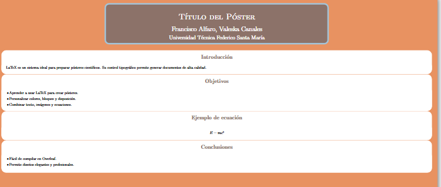
LaTeX
Más Herramientas
ğŸ› ï¸ Herramientas Útiles
📊 Tables Generator
Crea y exporta fácilmente tablas en formato LaTeX, HTML o Markdown.🔢 LaTeX Equation Editor
Genera ecuaciones LaTeX con vista previa en tiempo real.🧾 BibTeX Editor
Crea referencias bibliográficas en formato BibTeX.🧠Detexify
Dibuja un sÃmbolo y encuentra su comando LaTeX.
ğŸ› ï¸ Herramientas Útiles
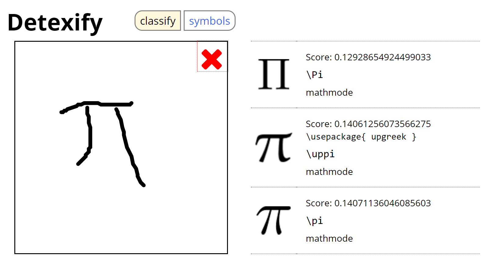

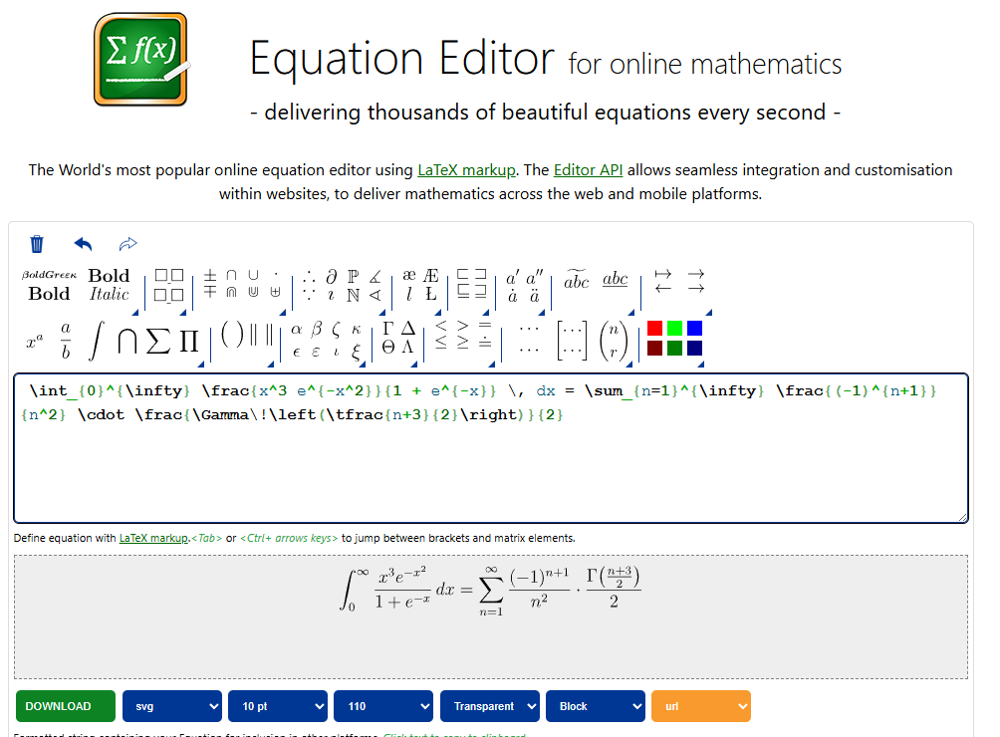

🤖 LaTeX + Inteligencia Artificial
- 💬 ChatGPT te ayuda a:
- Escribir y corregir código LaTeX.
- Corregir errores y mejorar el formato.
- Generar ecuaciones, tablas, referencias y figuras.
- 🧠Modelos como MathGPT:
- Interpretan LaTeX
- Resuelven matemáticas paso a paso.
🤖 LaTeX + Inteligencia Artificial
✨ Ejemplo de prompt:
“Estoy tratando de compilar esta ecuación en LaTeX, pero me da error. ¿Me puedes ayudar?”
✅ Esperado:
⌠e^-x^2 está mal escrito. Falta agrupar el exponente con llaves.
⌠Se recomienda escribir \,dx para buena tipografÃa.
🤖 LaTeX + Inteligencia Artificial
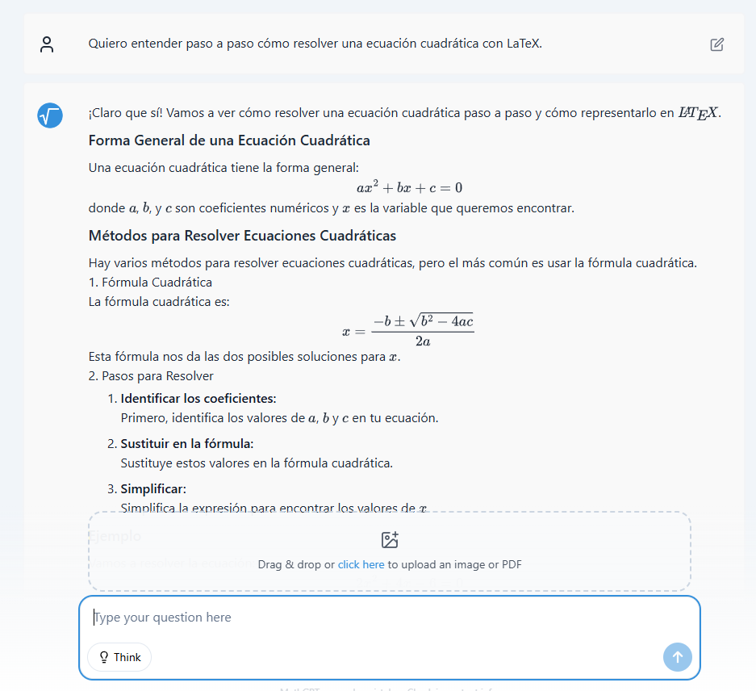
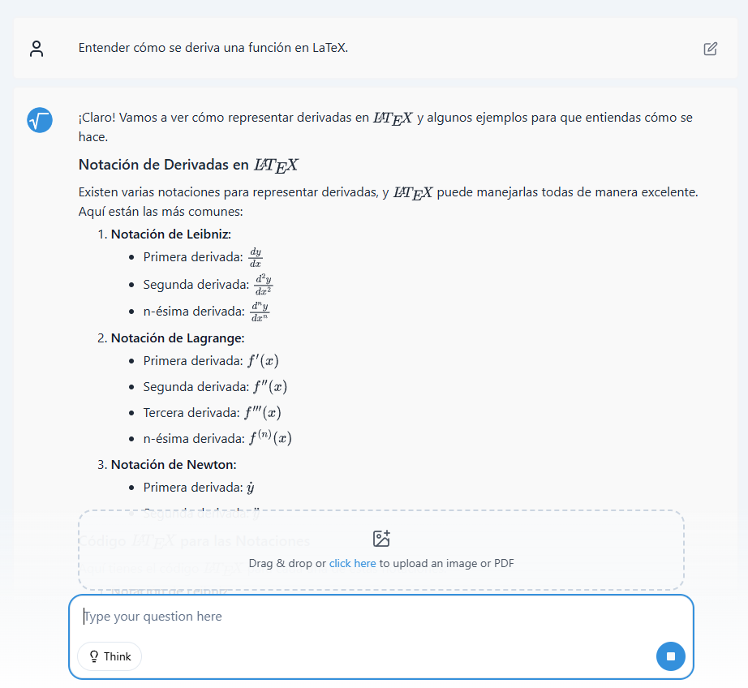
LaTeX
Conclusiones
✅ Conclusiones
- 🯠LaTeX permite crear documentos académicos con formato profesional.
- 💡 Ofrece control total sobre estilo y estructura.
- ğŸ› ï¸ Hay muchas herramientas que lo hacen más fácil de usar.
- 🤖 Con IA, escribir en LaTeX es aún más eficiente.
- 🚀 Overleaf permite comenzar sin instalar nada.
📚 Referencias y Recursos
🚀 Ejemplos en Overleaf: https://www.overleaf.com/project/68347a46c09a1b7708ccf48a
🉠¡Gracias por Participar!
🔗 Nuestro Sitio Web: seth-nut.github.io/resources